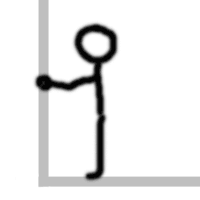
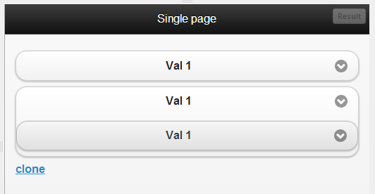

jQuery Mobile:
Common Pitfalls and Gotchas
Created by Alex Schmitz / @alexrschmitz All slides avalible at www.uglymongrel.com/jqueryasia/
jQuery Mobile can help you make fully featured mobile sites and apps
that are "Seriously cross-platform with HTML5"
It's not always sunshine and rainbows though

Some times it will leave you banging your head against the wall!

When "simple" things you have done 100 times before stop working.
$( document ).ready( function() {
$('#foo').click( function() {
alert('click');
});
});
The most common problems can be generally broken down into 3 categories
- Page Events & the AJAX Nav Model
- Dynamic Content & Widgets
- Device Bugs
Lets explore the concept of pages in jquery mobile first
- By default all pages are loaded via AJAX
- Pages are pulled into the current DOM to allow transitions
- Pages can be cached and remain in the DOM or removed after they are hidden
- A page is any div with a
data-role="page" - There can be one or more pages in single document
- Pages can be dynamicly injected, pulled via ajax, or navigated to with a normal http request
Now lets take a look at page events.
No matter what stage in a pages lifecycle you need to bind to.
there is an event for you
Page Load Events
(in order of execution)
pagebeforeload**pageload**pageloadfailed
** Pagebeforeload will trigger followed by either pageload or pageloadfailed based on the out come
Page Change Events
(in order of execution)
pagebeforechange**pagechange**pagechangefailed
** Pagebeforechange will trigger followed by either pagechange or pagechangefailed based on the out come
Page Transition Events
(in order of execution)
pagebeforeshowpagebeforehidepageshowpagehide
Page Initilization Events
(in order of execution)
pagebeforecreatepagecreatepageinit
Page Remove Events
(in order of execution)
pageremove
This brings us to our first set of Gotchas!
Why is only the first page of my document loaded?
Though you can place more then one page in a single document, you can not pull in a multi-page document via AJAX.
There is however a subpage plugin avalible to make this possible. https://github.com/ToddThomson/jQuery-Mobile-Subpage-Widget
Im trying to pass query params to a page but it's not working
If you are trying to pass query parameters to an internal or embedded page this is not supported.
There are however several plugins avalible to overcome this limitation.
Im trying to pass information via the hash but it's not working
This is because jQuery Mobile monitors the hash and uses changes to location.hash for tracking history and navigation.
Im trying to use the application cache and it's not working
Some browsers return a status of zero. This causes error handlers to be triggered in jQuery's Ajax function.
There is however a workaround
$.ajaxPrefilter( function(options, originalOptions, jqXHR) {
if ( applicationCache &&
applicationCache.status != applicationCache.UNCACHED &&
applicationCache.status != applicationCache.OBSOLETE ) {
// the important bit
options.isLocal = true;
}
});
The nav is acting erraticly
There are a few known problems with the pushState plugin due to different implementations of the pop state event in browsers.
The most common situation where this comes up is when you are frequently navigating between AJAX nav and non AJAX pages
If you are doing this frequently we recommend you disable the pushState plugin
Following a deep link ( a link to scroll to an id) does not work
jQuery mobile does not support deep linking.
You can still acomplish this easily with a simple 2 line function
function deepLink( id ) {
var pos = $(id).offset().top;
$.mobile.silentScroll( pos );
}
//Example usage
deepLink( '#foo' );
**Beware in iOS 5 and android 2.3
My Script / css only runs if i refresh the page!
Items in the head of pages loaded via AJAX are not loaded. Only the first page container is loaded
The simplest work around is to place them in the page div
We DO NOT recomend this though it will work for many things it is not good pratice
<div data-role="page">
//put your scripts and css here
</div>
Use this method at your own risk. It just might come back to bite you.
Option 2: Refactoring
Load scripts dynamicly
$( document ).on("#aboutPage", "pageinit", function() {
$.getScript("/js/aboutPageScript.js",function(){
//do stuff with aboutPageScript.js
});
});
Load all scripts and initialize based on pageInit
$( document ).on("#aboutPage", "pageinit", function() {
//Run code specific to #aboutPage
});
ALL ids must be unique in your entire app / site!
Not just in each page
Now on to our second category of common
Pitfalls & Gotchas
Dynamic Content & Widgets
This is the number one area people have trouble with
Definition: Dynamic Content
Dynamic content is content that is generated at the time of access by a user or that changes as a result of interaction with the user.
By this definition almost all content in a JQM is dynamic
- A page loaded via AJAX navigation
- Enhanced Form Elements
- A Filtered list view
- Popups
- Any content you inject into a page or manipulate via javaScript
A few good things to remember when working with jQuery Mobile widgets
- All of jQuery Mobile's enhanced form elements are widgets
- Most Widgets in jQuery Mobile enhance the markup
- jQuery Mobile widgets are based on the jQuery UI widget factory
- all jQuery mobile widgets inherit from the mobile base widget
- jQuery Mobile has 20 built in widgets
Lets start with some form issues that could leave you running in circles

I change the styling on my button, select etc, but it has no effect
The element you added is not the element you see
//Button before enhancement
<button>Button element</button>
//after enhancment
<div data-corners="true" data-shadow="true" data-iconshadow="true" data-wrapperels="span" data-icon="null" data-iconpos="null" data-theme="c" class="ui-btn ui-shadow ui-btn-corner-all ui-btn-up-c" aria-disabled="false">
<span class="ui-btn-inner ui-btn-corner-all">
<span class="ui-btn-text">Button element</span>
</span>
<button class="ui-btn-hidden" aria-disabled="false">Button element</button>
</div>
I change a css style and it dosen't show any change
Check your css specificity
.ui-li .ui-btn-text a.ui-link-inherit {
white-space: nowrap;
}
I update the value of a enhanced form element programaticly but the menu dosent change
When updating a select menu you must call refresh
//refresh select
$('select').selectmenu('refresh');
//refresh and force rebuild
$('select').selectmenu('refresh', true);
//refresh button
$( "button" ).button( "refresh" );
//refresh Flip / Slider
$( ".selector" ).slider( "refresh" );
//refresh Radio / Checkbox
$( "button" ).checkboxradio( "refresh" );
My date / time / number / color inputs look different in different browsers
Other than the basic border and color styles applied to text inputs jQuery Mobile does not enhance these. Additional control rendering is according to the browser.
My range / search input is being changed to type="number" / type="text"
These inputs are degraded to type text or number to allow for consistant look and enhancement by jQuery Mobile
Sometimes my custom select shows as a popup other times a dialog
Whether a custom select shows as a dialog or popup is based on the number of options and the amount of availble space on the screen
Calling disable on my button does not work
Buttons that are created from a link cannot be disabled
You can however still add the class .ui-disabled via javaScript
Controls in my fixed header / footer are not responding behave erraticly
There are several well known bugs in mobile browsers regarding form elements inside position: fixed; elements
Especially in Android 2.3
Now lets move on to some more general widget / dynamic content pitfalls for you to escape
I'm injecting html into a page but its not being enhanced
You must make sure the plugins are called to enhance the new elements .... simple solution is to trigger("create") on the container so you don't have to call each plugin manually
//HTML
<form id="formid">
<input type="search" id="searchInput"/>
<button id="submitButton">Submit</button>
</form>
//javaScript **CORRECT**
$("#formid").trigger("create");
//javaScript INCORRECT
$("#serchInput").trigger("create");
$("#submitButton").trigger("create");
Now how about for a couple issues involving cloning
I clone an enhanced element but the clone dosent update / respond / look as expected
Instead clone the native element and then enhance it
I want to render a piece of content without jQuery Mobile enhancing it but it happens automaticaly!
To prevent any form element from being enhanced add data-role="none"
Use data-enhance="false" to stop jQuery mobile from enhancing anything inside the container.
when using data-enhance="false" you must set $.mobile.ignoreContentEnabled to true prior to initilization
$(document).bind("mobileinit", function(){
//apply overrides here
$.mobile.ignoreContentEnabled = true;
});
The defaults i configure are being ignored!
defaults MUST be configured prior to initalization and before the jQuery Mobile script has been loaded
<script src="http://code.jquery.com/jquery-1.8.2.min.js"></script>
<script>
$(document).bind("mobileinit", function(){
$.mobile.foo = bar;
});
</script>
<script src="http://code.jquery.com/mobile/latest/jquery.mobile.min.js"></script>
Now for our last section
Device Bugs!
These are some NASTY bugs
The best resource for device bugs and information on them is the device bugs project on git hub
Now for my favorite two nasty device specific issues and trust me these are some nasty ones!
Position fixed elements become non responsive after a programatic scroll in iOS 5 and android 2.3
https://github.com/scottjehl/Device-Bugs/issues/1
A BIG note on this one is that this is also triggered by following a deep link to an id which causes the page to scroll
Android and position:fixed are fundamentally broken in weird ways
- Form elements elsewhere on the page, select menus in particular—can fail to respond to user interaction when an empty absolute positioned element is placed within a fixed position element.
- The above-described issue can also be triggered by an absolute positioned image inside of a fixed position element, but only when that image is using something other than its inherent dimensions.
- When a position: fixed element appears anywhere on a page, most 2D CSS transforms will fail. Oddly, only translate transforms seem uneffected by this
- Combinations position: fixed and overflow properties are best avoided, as both have been known to cause unpredictable issues in older versions of Android OS
- Any element that triggers the on-screen keyboard, when placed inside a position: fixed element, will fail to respond to user input when using anything other than the default keyboard. This includes Swype, XT9 or, it seems, any input method apart from the standard non-predictive keyboard.
The #1 thing i would like to leave you with is about what to do when you run into an issue
- Check the docs
- try and simplify your code and see if you can still reproduce the issue
- Ask for help in the forum and on the #jquerymobile channel on irc
- If you think what your running into is a bug in jQuery Mobile or even a device bug file a ticket on the issue tracker on github https://github.com/jquery/jquery-mobile/issues
- When you file an issue make sure to follow the the Contributing Guidelines at https://github.com/jquery/jquery-mobile/blob/master/CONTRIBUTING.md and use the jsbin provded to make a simple test case